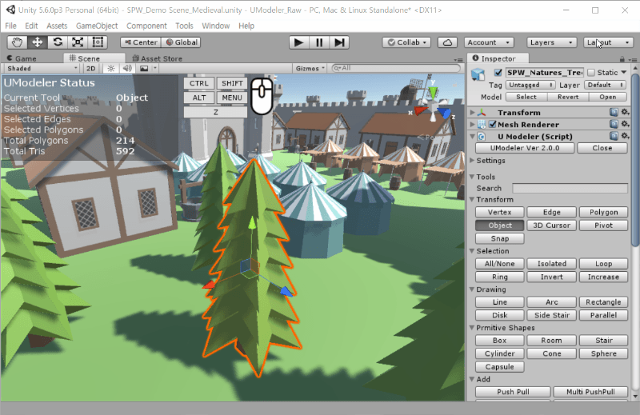
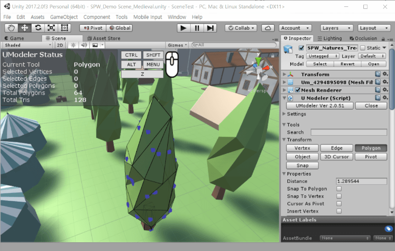
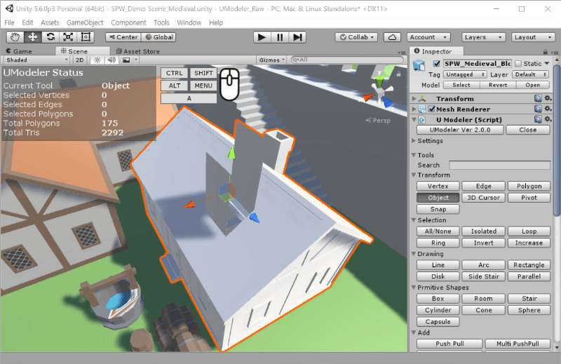

Transform Tools¶
Vertex / Edge / Polygon tool¶
There are 4 types of elements you can select and transform.
- Vertex - A point containing position, uv and color.
- Edge - Two connected vertices.
- Polygon - A simple polygon that can have holes.
To begin to transform elements, you have to select them at first. Which type of elements is tranformed depends on what tool is selected in the inspector.
Tip
1. You can add a new selection holding
CTRL and pressing LMB on an element.2. Pressing
W E or R changes the current gizmo like Unity.3. Dragging a mouse from an element causes moving the element
If you hold SHIFT when moving a gizmo, the selected elements are transformed separately from the adjacent polygons.
Properties¶
- Distance
- How distant the selected elements move. This is only available as translation gizmo is enabled.
- Snap To Polygon
- An edge is snapped to a close polygon within a specific distance. This is only available as the edge is being translated.
- Snap To Vertex
- A vertex is snapped to the other close vertex within a specific distance. This is only available as the vertex is being translated.
- Cursor As Pivot
- Rotates the selected elements around the 3D cursor.
- Move To Cursor
- Moves the current selected elements to the 3D cursor position.

{kind=link}
Selecting and transforming elements.

{kind=link}
Transforming elements holding SHIFT.

{kind=link}
Snap To Polygon property Demo.
Object tool¶
Object mode. You can select other objects.
3D Cursor tool¶
Sets a position of 3D cursor, which is used for a pivot of transfoming.
Pivot tool¶
Sets a position of a pivot of the object.
Properties¶
- Candidate Set
Bound Box- Position set coming from the bound box.Polygon- Position set coming from the vertices from the polygons.